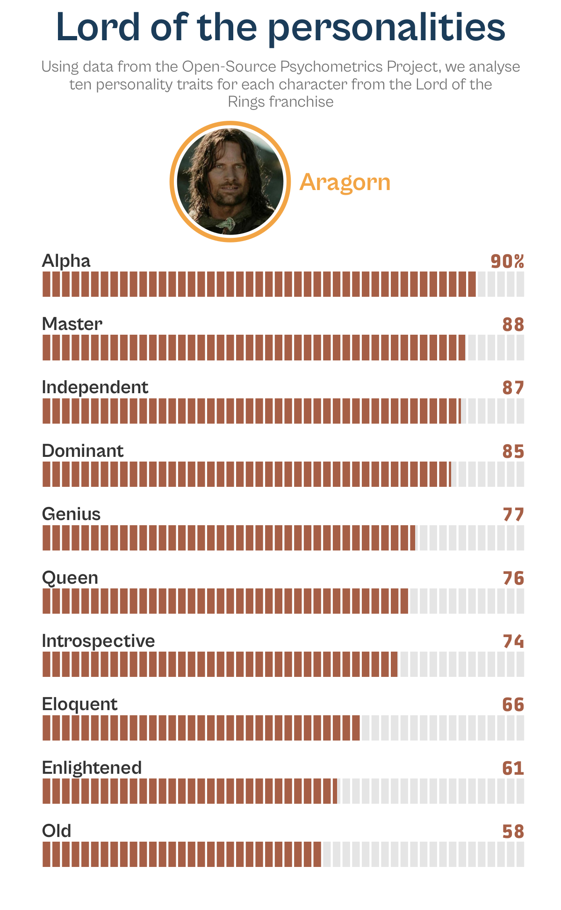
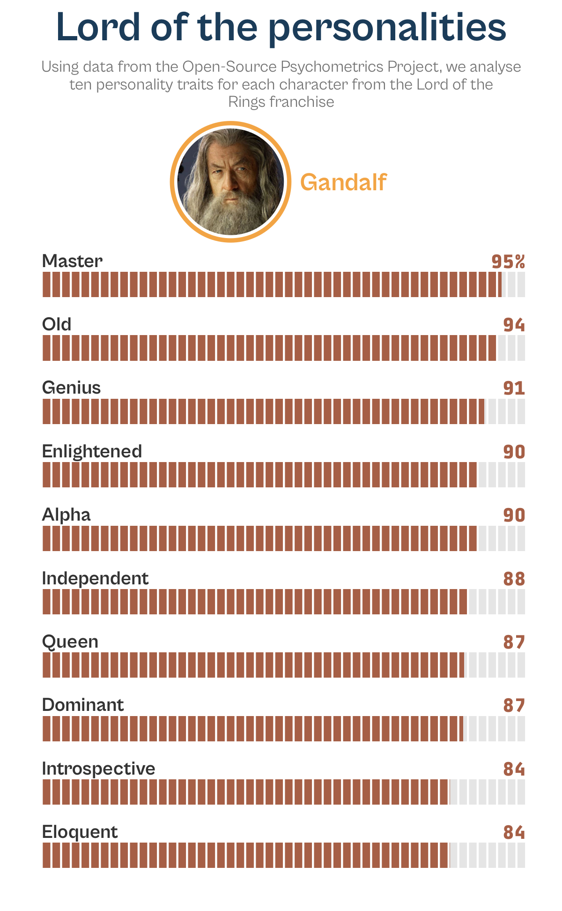
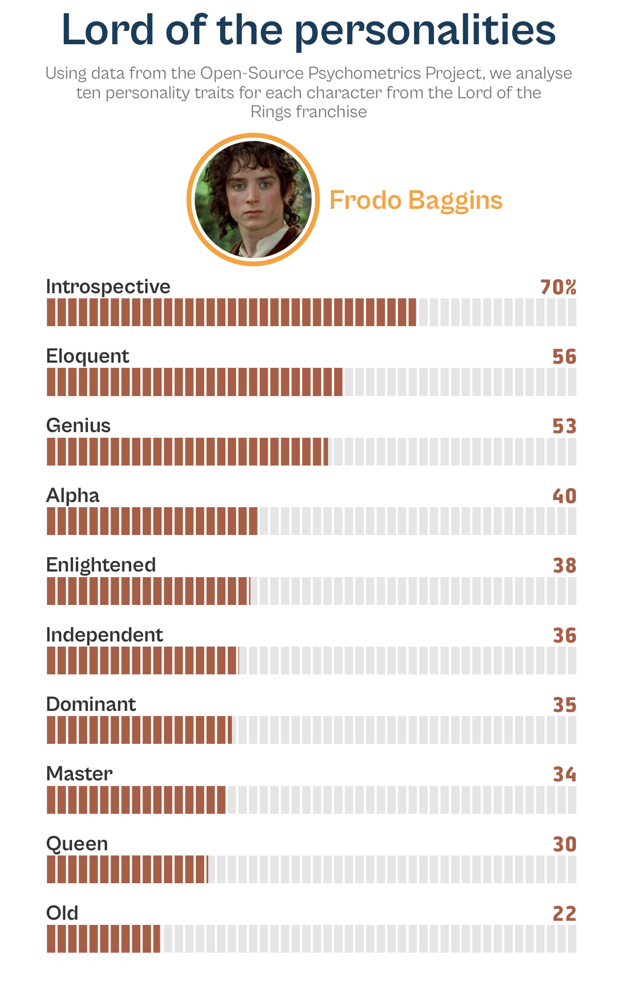
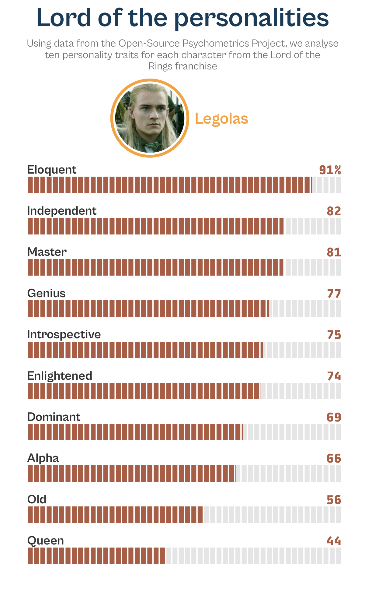
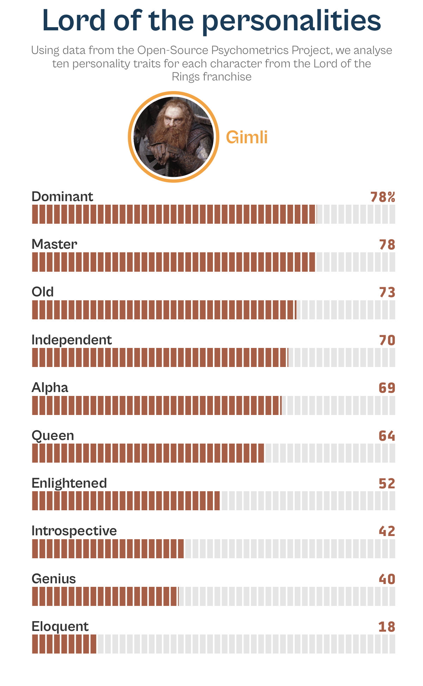

library(tidyverse) # for all the data wrangling
library(magick) # getting the images of the characters
library(gggrid) # adding images and character names to the plots#TidyTuesday 2002 week 33
Loading packages
Reading in the data
characters <- readr::read_csv('https://raw.githubusercontent.com/rfordatascience/tidytuesday/master/data/2022/2022-08-16/characters.csv')
psych_stats <- readr::read_csv('https://raw.githubusercontent.com/rfordatascience/tidytuesday/master/data/2022/2022-08-16/psych_stats.csv')Data wrangling
Will be working with the Lord of the Rings characters in this week’s data. Initial idea is to compare top 10 traits across all the main characters provided in the data-set.
Here I have extracted the top 10 traits based on those which show the greatest amount of variance amongst the characters. To compute the variance, first converted the personality column to a factor and then took its numeric representation.
top_questions <-
psych_stats |>
filter(uni_name == "Lord of the Rings") |>
group_by(question) |>
mutate(
question_var = as.factor(personality) |> as.numeric(personality) |> var()
) |>
ungroup() |>
filter(question_var == max(question_var)) |>
slice_head(n = 10) |>
pull(question)top_questions [1] "apprentice/master" "old/young"
[3] "dunce/genius" "alpha/beta"
[5] "enlightened/lost" "codependent/independent"
[7] "princess/queen" "dominant/submissive"
[9] "eloquent/unpolished" "introspective/not introspective"Now that we have the traits by which we want to compare, lets filter the data-set and convert it to a plot-ready data frame.
But before we do that, we will use Gandalf’s personality traits as the anchor points.
Note
Choosing Gandalf’s personality traits as the anchor points was just an arbitrary decision. Could equally well have chosen any other character or based it on the personality column as well.
It was tricky interpreting the avg_rating column, so thanks to Tanya for the below explanation:
Tip for #TidyTuesday folks this week. Avg rating is tied to personality extremes. One idea might be to rescale it 🙂 https://t.co/bzuTcvtKtY
— Tanya Shapiro (@tanya_shapiro) August 16, 2022
anchor_traits <-
psych_stats |>
filter(char_name == "Gandalf", question %in% top_questions) |>
select(question, anchor = personality)
anchor_traits# A tibble: 10 × 2
question anchor
<chr> <chr>
1 apprentice/master master
2 old/young old
3 dunce/genius genius
4 alpha/beta alpha
5 enlightened/lost enlightened
6 codependent/independent independent
7 princess/queen queen
8 dominant/submissive dominant
9 eloquent/unpolished eloquent
10 introspective/not introspective introspectiveplot_df <-
psych_stats |>
filter(uni_name == "Lord of the Rings", question %in% top_questions) |>
# Here I am retaining only those columns which I will be using in plotting.
# This is not necessary - just helps viewing all relevant columns in one go
# when working interactively
select(char_name, question, personality, avg_rating) |>
arrange(question) |>
left_join(anchor_traits, by = "question") |>
mutate(rescaled_score = if_else(anchor == personality, avg_rating, 100 - avg_rating))Plotting
Now we have a data also prepped and ready. So, let’s move onto some plotting!!
I was inspired by Nicola’s and Dan’s submissions for this week to try and create mobile-friendly card-style plots.
Definitely worth checking out their stunning plots as well:
This week's #TidyTuesday is about personality test results - I focused on Killing Eve characters! Inspired by @bear_jordan_ to try mobile-friendly data viz formats! Thanks to @tanya_shapiro for the data and plot inspiration!
— Nicola Rennie (@nrennie35) August 16, 2022
Code: https://t.co/XiCurLLHFI#rstats #DataViz pic.twitter.com/ZQeoD6xcoE
#TidyTuesday week 33: Psychometrics 🧠
— Dan Oehm 🌲⛰️ (@danoehm) August 18, 2022
Psychometric profiles for @BreakingBad main characters. Inspired by @nrennie35's style I've made individual character cards
🧵[1/3]#RStats #DataVisualization #dataviz pic.twitter.com/5VXDpSdWZ6
For each character I wanted to create a bar-(code)-plot similar to how trading cards look like. I ended up creating two functions to re-use in creating the individual plots:
img_circle()this function uses the{grid}package in order to add the character image and name at the top of the plot. This is used in conjunction withgrid_panel()in the main plotting functiondraw_barcode_plot()draw_barcode_plotthis is the main function which uses{ggplot}to create the plot
Expand the below section to view the full code.
Code
# function to add image and character's name to the plot
img_circle <- function(data, coords) {
img <- image_read(data$img_link[1])
character_name <- data$name_label[1]
outline <- circleGrob(x = 0.4, y = 1.1, r = 0.11, gp = gpar(col = "#F2A444", lwd = 3))
image <- rasterGrob(img, vp = viewport(x = unit(0.4, "npc"),
y = unit(1.1, "npc"),
width = unit(0.2, "npc"),
height = unit(0.2, "npc"),
clip = circleGrob()))
label <- textGrob(character_name, x = unit(0.53, "npc"), y = unit(1.1, "npc"),
hjust = 0, gp = gpar(fontfamily = "Cabinet Grotesk",
fontface = "bold",
fontsize = 13,
col = "#F2A444"))
gTree(children = gList(outline, image, label))
}
# main function to create the plot
draw_barcode_plot <- function(df, character_name) {
plot_df_filtered <-
df |>
filter(char_name == character_name) |>
mutate(
full = 100,
anchor = fct_reorder(anchor, rescaled_score)
) |>
arrange(anchor)
img_link <- characters |>
filter(name == character_name) |>
pull(image_link)
num_labels <- str_c(
round(plot_df_filtered$rescaled_score,0),
c(rep("", 9), "%")
)
subtitle <- "Using data from the Open-Source Psychometrics Project, we
analyse ten personality traits for each character from the Lord of the
Rings franchise" |>
str_wrap(65)
ggplot(plot_df_filtered, aes(y = anchor)) +
geom_col(aes(x = full), width = 0.4, fill = "grey90") +
geom_col(aes(x = rescaled_score), width = 0.4, fill = "#A65F46") +
geom_vline(xintercept = seq(0, 100, 2), color = "white") +
annotate("text", x = 0, y = 1:10 + 0.38,
label = str_to_sentence(plot_df_filtered$anchor),
hjust = 0, fontface = "bold", family = "Cabinet Grotesk",
size = 3.5, color = "grey20") +
annotate("text", x = 100, y = 1:10 + 0.38, label = num_labels,
hjust = 1, fontface = "bold", family = "Tabular", size = 3.5,
color = "#A65F46") +
grid_panel(img_circle, aes(img_link = img_link,
name_label = character_name)) +
labs(
title = "Lord of the personalities",
subtitle = subtitle
) +
scale_x_continuous(limits = c(0, 100)) +
coord_cartesian(clip = "off") +
theme_minimal(base_size = 12, base_family = "Cabinet Grotesk") +
theme(
plot.title.position = "plot",
plot.title = element_text(face = "bold", size = rel(1.8), hjust = 0.5,
color = "#1B3C59"),
plot.subtitle = element_text(size = rel(0.7), hjust = 0.5,
margin = margin(b = 70), color = "grey45"),
panel.grid.minor = element_blank(),
panel.grid.major = element_blank(),
axis.title = element_blank(),
axis.text = element_blank()
)
}…and here are the final plots.
draw_barcode_plot(plot_df, "Aragorn")
draw_barcode_plot(plot_df, "Gandalf")
draw_barcode_plot(plot_df, "Frodo Baggins")
draw_barcode_plot(plot_df, "Legolas")
draw_barcode_plot(plot_df, "Gimli")